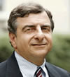
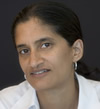
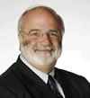

Marjorie Corman Aaron
Professor of Clinical Law, Center for Practice in Negotiation and Problem Solving
Marjorie offered three CLE courses through her Center for Practice in Negotiation and Problem Solving:
- Decision Analysis for Lawyers and Clients
- Getting to the Goal in Tough Negotiations (with Dwight Golann (Suffolk))
- Mediation Advocacy: How to Borrow a Mediator's Powers (with Prof. Golann)
Marjorie served as a judge for the professional articles award competition of the CPR Institute for Conflict Prevention and Resolution.
Marjorie's article, The Value of Decision Analysis in Mediation Practice, 11 Negot. J. 123 (1995), was cited in Douglas H. Yarn & Gregory Todd Jones, Alternative Dispute Resolution: Practice and Procedure in Georgia (Harrison, 3rd ed., 2006).
Profile of Professor Aaron :: Center for Practice in Negotiation & Problem Solving
Joseph Biancalana
Judge Joseph P. Kinneary Professor of Law
Joseph was named Judge Joseph P. Kinneary Professor of Law.
Joseph's article, Originalism and the Commerce Clause, 71 U. Cin. L. Rev. 383 (2002), was cited in Adam A. Perlin, What Makes Originalism Original?: A Comparative Analysis of Originalism and its Role in Commerce Clause Jurisprudence in the United States and Australia, 23 UCLA Pac. Basin L.J. 94 (2005).
Profile of Professor Biancalana
Lou Bilionis
Dean and Nippert Professor of Law
Lou published Commemorating Seventy-Five Years of the University of Cincinnati Law Review, 75 U. Cin. L. Rev. 1 (2006) (with Michael Solimine).
Lou's article, Conservative Reformation, Popularization, and the Lessons of Reading Criminal Justice as Constitutional Law, 52 UCLA L. Rev. 979 (2005), was cited in Richard E. Myers, Detector Dogs and Probable Cause, 14 Geo. Mason L. Rev. 1 (2006).
Profile of Dean Bilionis
Barbara Black
Charles Hartsock Professor of Law and Director, Corporate Law Center
Barbara was named Charles Hartsock Professor of Law.
Several of Barbara's publications were cited:
- Brokers and Advisers - What's in a Name?, 11 Fordham J. Corp. & Fin. L. 31 (2005); Securities Regulation in the Electronic Age: Online Trading, Discount Broker's Responsibilities and Old Wine in New Bottles, 28 Sec. Reg. L.J. 15 (2000); and The Irony of Securities Arbitration Today: Why Do Brokerage Firms Need Judicial Protection?, 72 U. Cin.. L. Rev. 415 (2003), in Thomas Lee Hazen, Law of Securities Regulation (Thomson West, 2007 Supp.).
- Corporate Dividends and Stock Repurchases, (Clark Boardman Callaghan, 1990), in Lee R. Petillon & Robert Joe Hull, Representing Start-Up Companies (Clark Boardman Callaghan, 2006 Supp.).
- The Second Circuit's Approach to the "In Connection With" Requirement of Rule 10b-5, 53 Brook. L. Rev. 539 (1987), in Keith A. Rowley, Cause of Action for Securities Fraud under Section 10(b) of the 1934 Securities Exchange Act and/or Rule 10b-5 in Causes of Action Second Series (Clark Boardman Callaghan, 2006 Supp.).
Profile of Professor Black
Paul L. Caron
Charles Hartsock Professor of Law and Director, Faculty Projects
Paul launched Food Law Prof Blog, by Donna M. Byrne (William Mitchell), as part of his Law Professor Blogs Network
Paul published several issues of his Tax Law Abstracts e-journals:
- 3 issues of Tax Law & Policy (vol. 7, nos. 52-54).
- 1 issue of Practitioner Series (vol. 6, no. 42).
- 2 issues of International & Comparative Tax (vol. 6, nos. 25-26) (co-edited with Robert A. Green (Cornell)).
Paul's book, Tax Stories, (Foundation Press, 2003), was cited in Tsilly Dagan, Commuting, 26 Va. Tax Rev. 185 (2006).
Profile of Professor Caron

Jacob Cogan
Assistant Professor of Law
Jacob's article, International Criminal Courts and Fair Trials: Difficulties and Prospects, 27 Yale J. Int'l L. 111 (2002), was cited in Douglas Donoho, Human Rights Enforcement in the Twenty-First Century, 35 Ga. J. Int'l & Comp. L. 1 (2006), and in Aparna Sridhar, The International Criminal Tribunal for the Former Yugoslavia's Response to the Problem of Transnational Abduction, 42 Stan. J. Int'l L. 343 (2006).
Profile of Professor Cogan
Rafael Gely
Judge Joseph P. Kinneary Professor of Law
Rafael was named Judge Joseph P. Kinneary Professor of Law.
Rafael's article, The Law and Economics of Employee Information Exchange in the Knowledge Economy, 12 Geo. Mason L. Rev. 651 (with Leonard Bierman), was cited in Norman D. Bishara, Covenants Not to Compete in a Knowledge Economy: Balancing Innovation from Employee Mobility against Legal Protection for Human Capital Investment, 27 Berkeley J. Emp. & Lab. L. 287 (2006).
Profile of Professor Gely
Ann Hubbard
Professor of Law
Ann's article, Understanding and Implementing the ADA's Direct Threat Defense, 95 Nw. U. L. Rev. 1279 (2001), was cited in Alex B. Long, (Whatever Happened To) the ADA's "Record of" Prong(?), 81 Wash. L. Rev. 669 (2006).
Profile of Professor Hubbard
Bert B. Lockwood, Jr.
Distinguished Service Professor of Law and Director, Urban Morgan Institute for Human Rights
The Pennsylvania Studies in Human Rights, for which Bert serves as Series Editor, published Erin Daly & Jeremy Sarkin, Reconciliation in Divided Societies: Finding Common Ground (2006).
Profile of Professor Lockwood :: Urban Morgan Institute for Human Rights
S. Elizabeth Malloy
Professor of Law and Faculty Director, Glenn M. Weaver Institute for Law & Psychiatry
Betsy's article, Something Borrowed, Something Blue: Why Are Disability Law Claims Any Different?, 33 Conn. L. Rev. 603 (2001), was cited in Cheryl L. Anderson, What Is "Because of the Disability" under the Americans with Disabilities Act? Reasonable Accommodation, Causation, and the Windfall Doctrine, 27 Berkeley J. Emp. & Lab. L. 323 (2006).
Profile of Professor Malloy :: Glenn M. Weaver Institute for Law and Psychiatry
Bradford C. Mank
James B. Helmer Jr. Professor of Law
Brad published Title VI and the Warren County Protests, 1 Golden Gate Envtl. L. Rev. ___ (2007).
Several of Brad's articles were cited:
- Can Congress Regulate Intrastate Endangered Species under the Commerce Clause?, 69 Brook. L. Rev. 923 (2004), in Mollie Lee, Environmental Economics: A Market Failure Approach to the Commerce Clause, 116 Yale L.J. 456 (2006).
- The Murky Future of the Clean Water Act after SWANCC: Using a Hydrological Connection Approach to Saving the Clean Water Act, 30 Ecology L.Q. 811 (2003), in Tova Wolking, Four Years after SWANCC; Regaining Ground in Federal Wetlands Protection, 33 Ecology L.Q. 933 (2006).
- Reforming State Brownfield Programs to Comply with Title VI, 24 Harv. Envtl L. Rev. 115 (2000), in Matthew D. Fortney, Devolving Control over Mildly Contaminated Property: The Local Cleanup Program, 100 Nw. U. L. Rev. 1863 (2006).
Profile of Professor Mank
Ronna Greff Schneider
Professor of Law
Ronna's article, Sexual Harassment and Higher Education, 65 Tex. L. Rev. 525 (1987), was cited in Rebekah Ryan Clark, The Writing on the Wall: The Potential Liability of Mediators as Fiduciaries, 2006 BYU L. Rev. 1033.
Profile of Professor Schneider

Michael E. Solimine
Donald P. Klekamp Professor of Law, Director, Faculty Development and Extern Program
Michael published Commemorating Seventy-Five Years of the University of Cincinnati Law Review, 75 U. Cin. L. Rev. 1 (2006) (with Lou Bilionis).
Several of Michael's articles were cited:
- Deciding to Decide: Class Action Certification and Interlocutory Review by the United States Courts of Appeals under Rule 23(f), 41 Wm & Mary L. Rev. 1531 (2000) (with Christine Oliver Hines), in James M. Gaitis, The Federal Arbitration Act: Risks and Incongruities Relating to the Issuance of Interim and Partial Awards in Domestic and International Arbitrations, 16 Am. Rev. Int'l Arb. 1 (2005).
- Forum-Selection Clauses and the Privatization of Procedure, 25 Cornell Int'l L.J. 51 (1992), in Frederick Tung, Before Competition: Origins of the Internal Affairs Doctrine, 32 J. Corp. L. 33 (2006).
- The Future of Parity, 46 Wm & Mary L. Rev. 1457 (2005), in James E. Moliterno, The Administrative Judiciary's Independence Myth, 41 Wake Forest L. Rev. 1191 (2006), and in Kevin M. Clermont, Reverse-Erie, 82 Notre Dame L. Rev. 1 (2006).
- Ideology and En Banc Review, 67 N.C. L. Rev. 29 (1988), in Paul G. Ulrich, Federal Appellate Practice Guide 9th Circuit, 2d (Lawyers Cooperative, 2006 Supp.).
- Judicial Influence: A Citation Analysis of Federal Courts of Appeals Judges, 27 J. Legal Stud. 271 (1998) (with William M. Landes & Lawrence Lessig), in William K. Ford, Judging Expertise in Copyright Law, 14 J. Intell. Prop. L. 1 (2006).
- Revitalizing Interlocutory Appeals in the Federal Courts, 58 Geo. Wash. L. Rev. 1165 (1990), in Cassandra Burke Robertson, Appellate Review of Discovery Orders in Federal Court: A Suggested Approach for Handling Privilege Claims, 81 Wash. L. Rev. 733 (2006).
- Supreme Court Monitoring of State Courts in the Twenty-First Century, 35 Ind. L. Rev. 335 (2002), in Robert M. Howard, Scott E. Graves, & Julianne Flowers, State Courts, the U.S. Supreme Court, and the Protection of Civil Liberties, 40 Law & Soc'y Rev. 845 (2006).
- Constitutional Litigation in Federal and State Courts: An Empirical Analysis of Judicial Parity, 10 Hastings Const. L.Q. 213 (1983) (with Walker), in Rebecca E. Zeitlow, Enforcing Equality: Congress, the Constitution, and the Protection of Human Rights (New York University Press, 2006), and in John F. Preis, Jurisdiction and Discretion in Hybrid Law Cases, 75 U. Cin. L. Rev. 145 (2006).
- The Three-Judge District Court in Voting Rights Litigation, 30 U. Mich. J. Of Law Reform 79 (1996), in Daniel P. Tokaji, If It's Broke, Fix It: Improving Voting Rights Preclearance, 49 Howard L.J. 785 (2006).
- Forum-Selection Clauses and the Privatization of Procedure, 25 Cornell Int'l L.J. 51 (1992), in Frederick Tung, Before Competition: Origins of the Internal Affairs Doctrine, 32 Iowa J. Corp. L. 33 (2006).
- Supreme Court Monitoring of the U.S. Court of Appeals En Banc, 9 Sup, Ct. Econ. Rev. 171 (2001) (with George), and Ideology and En Banc Review, 67 N.C. L. Rev. 29 (1988), in Wendy L. Martinek, Amici Curiae in the U.S. Courts of Appeals, 34 Am. Pol. Q. 803 (2006).
Profile of Professor Solimine
Adam N. Steinman
Assistant Professor of Law
Several of Adam's articles were cited:
- The Irrepressible Myth of Celotex: Reconsidering Summary Judgment Burdens Twenty Years after the Trilogy, 63 Wash. & Lee L. Rev. 144 (2006), in Suzanna Sherry, Logic without Experience: The Problem of Federal Appellate Courts, 82 Notre Dame L. Rev. 97 (2006).
- "Less" is "More"? Textualism, Intentionalism, and a Better Solution to the Class Action Fairness Act's Appellate Deadline Riddle, 92 Iowa L. Rev. ___ (2007), in Edward A. Hartnett, Against (Mere) Restyling, 82 Notre Dame L. Rev. 155 (2006).
- Sausage-Making, Pigs' Ears, and Congressional Expansions of Federal Jurisdiction: Exxon Mobil v. Allapattah and its Lessons for the Class Action Fairness Act, 81 Wash L. Rev. 279 (2006), in Helen Norton, Reshaping Federal Jurisdiction: Congress's Latest Challenge to Judicial Review, 41 Wake Forest L. Rev. 1003 (2006), and Suzanna Sherry, Logic without Experience: The Problem of Federal Appellate Courts, 82 Notre Dame L. Rev. 97 (2006).
Profile of Professor Steinman

Suja Thomas
Professor of Law
Suja's article, Modern Procedure, and the English Common Law, 82 Wash. U. L.Q. 687 (2004), was cited in North Carolina v. Blackwell, (N.C. Sup. Ct. 12/15/06).
Profile of Professor Thomas

Joseph P. Tomain
Dean Emeritus and Wilbert and Helen Ziegler Professor of Law
Joe published Smart Energy Path: How Willie Nelson Saved the Planet, 36 Cumb. L. Rev. 417 (2006). His article, Katrina's Energy Agenda, 20 Nat. Resources & Env't 43 (2006), and book, Energy Law in a Nutshell (West Group, 2004) (with Richard Cudahy), were cited in Scott A. Zimmermann, Feds and Fossils: Meaningful State Participation in the Development of Liquefied Natural Gas, 33 Ecology L.Q. 789 (2006).
Profile of Professor Tomain
Ingrid Brunk Wuerth
Professor of Law
Several of Ingrid's articles were cited:
- Authorizations for the Use of Force, International Law, and the Charming Betsy Canon, 46 B.C. L. Rev. 293 (2005), in Hillary J. Massey, Disposing of Children: The Eighth Amendment and Juvenile Life without Parole after Roper, 47 B.C. L. Rev. 1083 (2006).
- The President's Power to Detain "Enemy Combatants": Modern Lessons from Mr. Madison's Forgotten War, 98 Nw. U. L. Rev. 1567 (2004), in Tung Yin, Coercion and Terrorism Prosecutions in the Shadow of Military Detention, 2006 BYU L. Rev. 1255.
- Private Religious Choice in German and American Constitutional Law: Government Funding and Government Religious Speech, 31 Vand. J. Transn'l L. 1127 (1998), in Edward J. Eberle, Religion in the Classroom in Germany and the United States, 81 Tul. L. Rev. 67 (2006).
Profile of Professor Wuerth
Faculty News is edited by Paul L. Caron, Charles Hartsock Professor of Law and Director of Faculty Projects.
Back issues can be accessed from the Faculty News Archive.